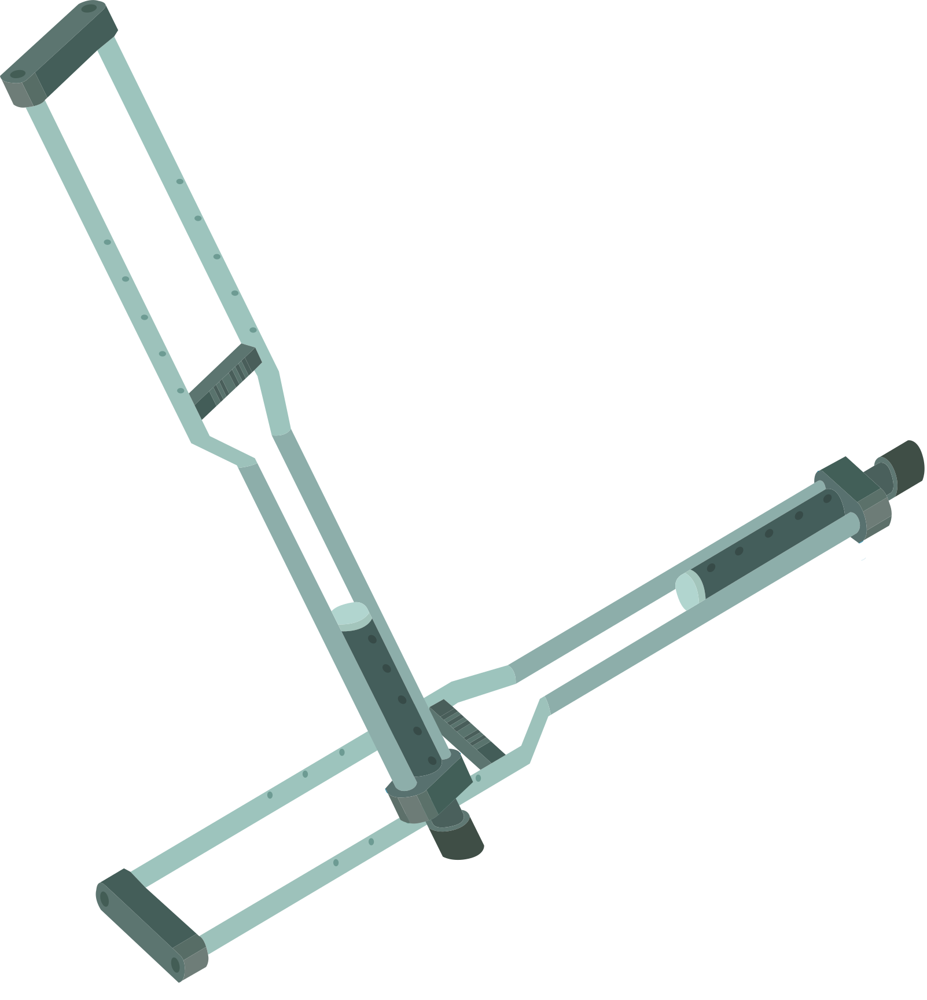
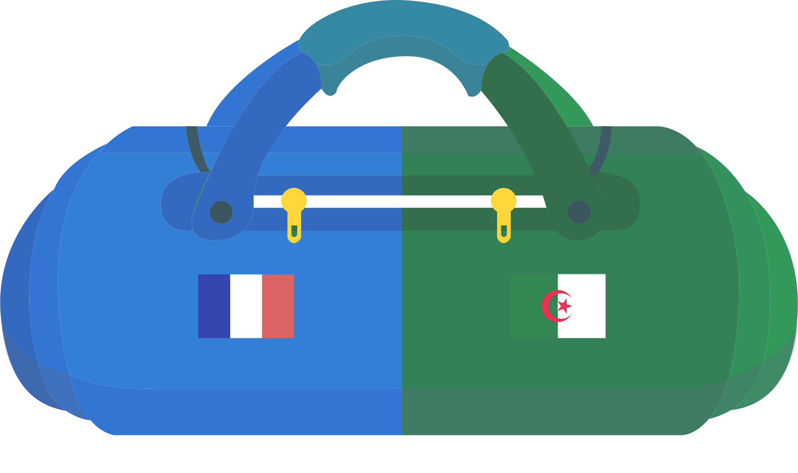

HISTOIRE
LE CLUB
La gymnaste franco-algérienne est licenciée au club d'Avoine-Beaumont depuis son plus jeune âge.
Aux côtés de ses coachs Marc et Gina Chirilcenco, elle se spécialise aux barres asymétriques et devient championne de France de cet agrès en 2021, à 14 ans.
LES OBSTACLES
La même année, la gymnaste subit une opération des deux genoux pour soigner une ostéochondrite.
Après huit mois de rééducation, son médecin l'autorise à reprendre la gym mais le médecin de la FFGym s'y oppose, sur fond de discorde entre la Fédération et Avoine-Beaumont.
Interdite de justaucorps bleu-blanc-rouge, Kaylia demande à concourir pour l'Algérie. Mais la FFGym refuse de la laisser partir, jusqu'au dernier moment...
SON ENVOL
La FFGym capitule à quelques jours des championnats d'Afrique. Kaylia Nemour se pare de l'or sous bannière algérienne puis devient vice-championne du monde aux barres asymétriques à Anvers en octobre 2023, où elle se qualifie pour les JO de Paris 2024.
Welcome to